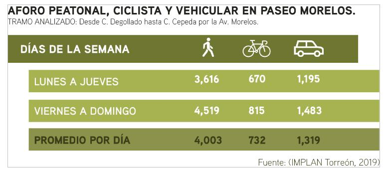
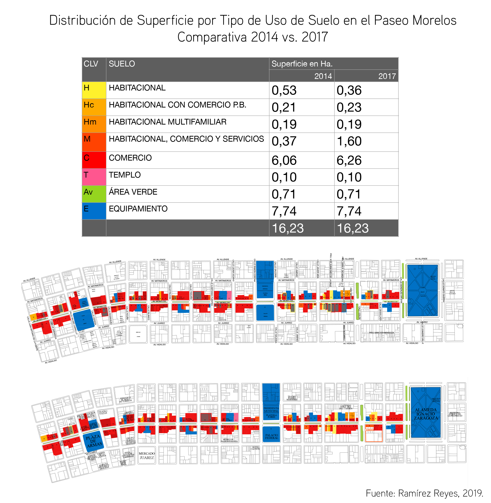

La periodista, teórica y activista, Jane Jacobs (1916 – 2006), con su libro “Muerte y Vida de las Grandes Ciudades” (1961), transformó las ideas de la planificación urbana moderna tras observar las dinámicas y el funcionamiento de las ciudades; en lugar de estipular cómo es que deberían funcionar, se enfocó en describir los factores que las afectan, enfatizando que el ciudadano es quien detecta sus necesidades y posibles mejoras, tras vivir el espacio cotidianamente.
Las diez ideas más importantes de Jacobs serán explicadas contrastando con datos del Centro Histórico de Torreón (CHT), principalmente del Paseo Morelos (PM).
1) Ojos en la Calle; entre mayor flujo peatonal, mayor el par de ojos que supervisa el entorno.
En marzo del 2019, el IMPLAN y la IBERO Torreón realizaron un aforo de peatones, ciclistas y automóviles en el PM, con los siguientes los resultados:

2) Capital Social; las actividades cotidianas producen interacciones que construyen ciudadanía. Éstas fundan una base de confianza, aumentando resiliencia y empatía colectiva en tiempos difíciles.
En el 2018, el IMPLAN encuestó a visitantes del PM y concluyó que el 30.8% de sus visitantes ha participado en al menos una iniciativa ciudadana, siendo Moreleando la principal.
3) 4 Generadores de Diversidad; para lograr una ciudad social, segura, y económicamente vibrante.
a) Uso Mixto; actividad diversa a lo largo del día, asegurando dinámicas 24/7.

b) Edificaciones Antiguas; reutilización de obras existentes, otorgando ahorro en materia de infraestructura y superestructura. El patrimonio arquitectónico catalogado por INAH e INBA del CHT para 2019, es de 139 inmuebles existentes; 25 ubicados en PM.
c) Cuadras Pequeñas; abundancia y diversidad de servicios concentrados en una distancia corta, caminable, promoviendo la interacción humana, aumentando las oportunidades de negocio y convivencia.
d) Densidad Poblacional, una gran concentración de personas en un área pequeña genera pluralidad en las funciones ciudadanas. La densidad para el CHT es baja, con 28.63 hab/ha, en comparación con la municipal que es de 40.89 hab/ha. Cabe mencionar que 47 manzanas de las 241 que conforman el CHT, no cuentan con población habitante.
4) Forma sigue la Función; modas y tecnologías van y vienen, lo que importa es saber qué dinámicas son vitales en la ciudad, sabiendo cómo es que el ciudadano las vive y percibe. De ahí, partir a si el diseño y la planificación urbana reflejan y sirven esas funciones.
5) Economía Local; autosuficiencia; el crecimiento económico global y nacional parte de lo local. El número de unidades económicas en el CHT es de 4,240; donde 268 se ubican en el PM.
6) Innovación; en el ámbito laboral, a mayor diversidad económica, mejores oportunidades. Los giros predominantes de unidades económicas en PM varían, venta de vestimenta, alimentos y libros, a diferencia de las C. Hidalgo o Juárez, que históricamente se han caracterizado por venta de calzado, principalmente.
7) Muchos Pequeños Planes; la diversidad se logra mediante la individualidad, ver cómo se aporta al sueño de los unos a los otros, como seres humanos, para lograr un ideal colectivo y por ende, un bienestar comunal.
8) Dinero Gradual; los pequeños planes y la innovación requieren de algún sustento económico, el dinero debe fluir constantemente para progresar integralmente.
9) La Ciudad como un Ente Complejo y Organizado; la ciudad funciona como un ecosistema, donde todo está intrínsecamente conectado, ésta no puede responder aisladamente a fórmulas o estadísticas; sino a observaciones y razonamiento, dado a su complejo dinamismo. Hay que pensarla como un ente vivo que si no se cuida, puede enfermar y morir.
10) Ciencia del Ciudadano; más que expertos teóricos, quien mejor aporta es quien la vive intensamente, el ciudadano la observa y conoce, su expertiz es actual y empírica.
Según CONAPO, Torreón cuenta con 716,672 habitantes (2018), lo que Jacobs da a entender es que existen 716,672 expertos en materia urbana. Hoy más que nunca, es importante reconocer el conocimiento y el poder del ciudadano, pues es quien se encarga de nutrirla día con día; la toma de decisión para construir ciudades más sociales, funcionales y eficientes, se encuentra en quien la habita.
Referencias.
Consejo Nacional de Población. (2018). Proyecciones de la Población. Obtenido de CONAPO: http://www.conapo.gob.mx/es/CONAPO/proyecciones_datos
IMPLAN Torreón. (junio - julio de 2018). Paseo Morelos. Obtenido de IMPLAN Torreón: http://www.trcimplan.gob.mx/
IMPLAN Torreón. (2019). Obtenido de IMPLAN Torreón: http://www.trcimplan.gob.mx/
IMPLAN Torreón. (febrero de 2019). Monitor de Centro Histórico. Obtenido de IMPLAN Torreón: http://www.trcimplan.gob.mx/
Jane's Walk. (24 de Abril de 2019). Legendary urban thinker, writer, and activist. Obtenido de Jane's Walk:
http://janeswalk.org/wp-content/uploads/2017/12/Jane_Jacobs_One_Pager_1.pdf
Plan Director de Desarrollo Urbano del Municipio de Torreón. (14 de febrero de 2014). Plan Director de Desarrollo Urbano del Municipio de Torreón, Coahuila. Obtenido de IMPLAN Torreón: http://www.trcimplan.gob.mx/sig-planes/plan-director-de-desarrollo-urbano-de-municipio-de-torreon.pdf
Ramírez Reyes, J. A. (2019). Efecto de la peatonalización en el comercio a pie de calle: Caso Paseo Morelos, periodo 2014 - 2017, Torreón, Coah. Torreón, Coahuila, México.